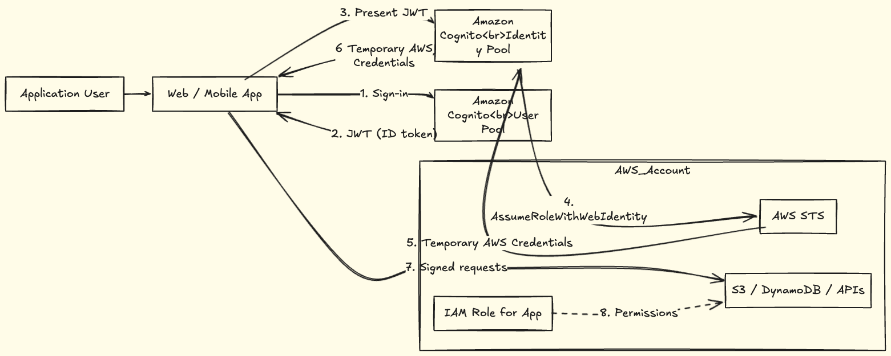

02. Security
2. Security
 Source: AWS Builder
Source: AWS Builder
Below is a bare‑minimum, distilled version of your AWS Security notes — keeping only the concepts that actually matter long‑term and removing all repetition and teaching detail.
AWS Security - Quick Notes
1. AWS Identity and Access Management (IAM)
- IAM controls authentication and authorization for AWS accounts and resources.
- Lets you share access without using root credentials.
- Provides fine‑grained, explicit permissions.
- IAM is global (not Region‑specific).
- Supports MFA, password policies, and identity federation.
- IAM itself is free.
2. IAM Identities
- IAM User
- Represents a person or service.
- Has permanent credentials (console and/or programmatic).
- Should not share credentials.
- IAM Group
- Collection of users.
- Permissions are assigned to groups, not individuals.
- Users can belong to multiple groups.
- IAM Role
- No long‑term credentials.
- Uses temporary credentials.
- Preferred for:
- AWS services
- Federated users
- Cross‑account access
3. IAM Policies
- Policies define permissions (allow/deny).
- Attached to users, groups, or roles.
- Evaluated on every AWS API call.
- Core elements:
Effect(Allow / Deny)ActionResource
*on action and resource = full access.- Explicit deny always wins.
4. Security Best Practices
- Lock down the root user
- Enable MFA
- Delete root access keys
- Never use root for daily work
- Least privilege
- Start with minimal access
- Grant only what is required
- Prefer roles over users
- Avoid long‑lived access keys
- Reduce blast radius of credential leaks
5. Federation & Centralized Identity
- Use an Identity Provider (IdP) when possible.
- Grant access via IAM roles, not IAM users.
- AWS IAM Identity Center (SSO):
- Central user & permission management
- Works across multiple AWS accounts
- Integrates with external IdPs
One‑Line Mental Model
IAM decides who can call which AWS APIs on which resources.
Deep Dive into IAM Policy
- IAM policies manage access and permissions to AWS services/resources.
- Policies can be attached to users, groups, or roles.
- When a request is made, AWS evaluates:
- Policies on the user/role
- Policies on any groups the user belongs to
- Policies on the user/role
- Example: A developer in the developers group → AWS checks both the group policies and the user’s policies to decide allow/deny.
IAM POLICY EXAMPLES
Most policies are stored in AWS as JSON documents with several policy elements. Take a look at the following example of what providing admin access through an IAM identity-based policy looks like.
{
"Version": "2012-10-17",
"Statement": [{
"Effect": "Allow",
"Action": "*",
"Resource": "*"
}]
}An IAM policy has four key JSON elements:
- Version → defines the policy language version.
- Always use
"Version": "2012-10-17"for full feature support.
- Always use
- Effect → specifies whether to Allow or Deny access.
- Action → describes the allowed/denied actions.
"*"= wildcard → all actions.
- Resource → defines which resources are affected.
"*"= all resources.
- Version → defines the policy language version.
Example: Policy with
"Action": "*"and"Resource": "*"→ grants administrator access (all actions on all resources).
{"Version": "2012-10-17",
"Statement": [{
"Effect": "Allow",
"Action": [
"iam: ChangePassword",
"iam: GetUser"
],
"Resource": "arn:aws:iam::123456789012:user/${aws:username}"
}]
}- More granular example:
- Allows a user to:
iam:ChangePassword(change their own password)
iam:GetUser(get info about their own user)
- Uses variable substitution
${aws:username}→ limits permissions to the specific user only.
- Allows a user to:
UNDERSTAND POLICY STRUCTURE
When creating a policy, it is required to have each of the following elements inside a policy statement.

Summarizing Security

Different types of AWS IAM Users
- Even a CICD System can be an IAM User (with specific permissions)
 Source: AWS Blg
Source: AWS Blg
The concept of Groups and Roles
- One user could be in multiple groups

How to enables employees access AWS Account (via IdP)

How to enable customers access to Application deployed in AWS Account

| Feature | AWS IAM Identity Center | AWS Cognito |
|---|---|---|
| Used by | Employees | App users |
| Purpose | Access AWS accounts | Access your application |
| Grants console access? | Yes | No |
| Grants CLI access? | Yes | No |
| Issues AWS creds? | Yes | Yes (via Identity Pool) |
| Scope | Organization-wide | Application-level |